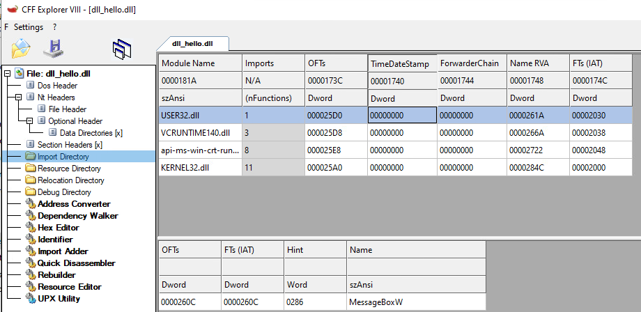

# PE Imports
Function imports are stored in the
.idata section of PE file.• Chapter 6.4.1 - http://www.skyfree.org/linux/references/coff.pdf
Import information is stored in the
Import Directory Table.The
Import Directory Table contains a series of Import Directory Entries, one for each DLL to be imported into the process. In the Windows API, this struct is called IMAGE_IMPORT_DESCRIPTOR.Two important values are included in this struct:
•
OriginalFirstThunk - points to the Import Lookup Table•
FirstThunk - points to the Import Address TableThe
Import Lookup Tablestores a list of the functions to import from that DLL (as well as how to import them - by name or by ordinal).
The
Import Address Tablegets filled at runtime when the PE loads. It stores the addresses of the imported functions.
e.g:
• The Import Lookup Table stores
MessageBoxA (the function to import)• The Import Address Table gets filled at runtime and stores
0x00007FF9CF49AA70 (the address of MessaegBoxA)
Here's a more detailed diagram from Reverse Engineering for Beginners by Dennis Yurichev.
## Info on the Import Structs
These can help you understand how imports work a little easier.
Also here for future reference when you write code as some of these structs are undocumented.
You can grab the first entry in the Import Directory Table like this:
PIMAGE_IMPORT_DESCRIPTOR import_directory = IMAGE_NT_HEADER->OptionalHeader.DataDirectory[IMAGE_DIRECTORY_ENTRY_IMPORT].VirtualAddress)### IMAGE_IMPORT_DESCRIPTOR
The
IMAGE_IMPORT_DESCRIPTOR struct is for each DLL to be imported by the process.It contains the DLL name, a pointer to the Import Lookup Table, and a pointer to the Import Address Table.
typedef struct _IMAGE_IMPORT_DESCRIPTOR {
union {
DWORD Characteristics;
DWORD OriginalFirstThunk; // RVA to Import Lookup Table (Characteristics)
} DUMMYUNIONNAME;
DWORD TimeDateStamp; // 0 until bound; then becomes timestamp of DLL
DWORD ForwarderChain;
DWORD Name; // address of DLL name relative to image base
DWORD FirstThunk; // RVA to Import Address Table (Thunk table)
} IMAGE_IMPORT_DESCRIPTOR;
union {
DWORD Characteristics;
DWORD OriginalFirstThunk; // RVA to Import Lookup Table (Characteristics)
} DUMMYUNIONNAME;
DWORD TimeDateStamp; // 0 until bound; then becomes timestamp of DLL
DWORD ForwarderChain;
DWORD Name; // address of DLL name relative to image base
DWORD FirstThunk; // RVA to Import Address Table (Thunk table)
} IMAGE_IMPORT_DESCRIPTOR;
### IMAGE_THUNK_DATA and the Import Lookup Table
The Import Lookup Table information is contained in an
IMAGE_THUNK_DATA struct.It describes whether a function is imported by ordinal or name.
For 32bit PEs this is a 32bit field.
For 64bit PEs this is a 64bit field.
The last bit in the field is the most significant bit
•
31 for 32bit•
63 for 64bit• Bit 31 / 63, the most significant bit, describes whether the function is imported by ordinal
◇
1 if import by ordinal◇
0 if import by name• Bits 30 - 0 / 62 - 0 are either the
◇ ordinal number
◇ or the address of a function name table containing the function name, relative to image base
Check if function is imported by ordinal:
IMAGE_SNAP_BY_ORDINAL(import_lookup_table->u1.Ordinal);If a function is imported by name, you can grab a pointer to a struct containing the name:
PIMAGE_IMPORT_BY_NAME import_name = file_buffer + import_lookup_table->u1.AddressOfDataName is located here:
import_name->Name;typedef struct _IMAGE_THUNK_DATA64 {
union {
ULONGLONG ForwarderString; // PBYTE
ULONGLONG Function; // PDWORD - store address of function
ULONGLONG Ordinal; // whether import by ordinal or name
ULONGLONG AddressOfData; // pointer to PIMAGE_IMPORT_BY_NAME
} u1;
} IMAGE_THUNK_DATA64;
typedef IMAGE_THUNK_DATA64 * PIMAGE_THUNK_DATA64;
union {
ULONGLONG ForwarderString; // PBYTE
ULONGLONG Function; // PDWORD - store address of function
ULONGLONG Ordinal; // whether import by ordinal or name
ULONGLONG AddressOfData; // pointer to PIMAGE_IMPORT_BY_NAME
} u1;
} IMAGE_THUNK_DATA64;
typedef IMAGE_THUNK_DATA64 * PIMAGE_THUNK_DATA64;
### IMAGE_THUNK_DATA and the Import Address Table
The Import Address Table is just like the Import Lookup Table, except that it gets filled at runtime with the address of the imported function.
Function stores the address of the function.## Fixing Imports Manually
Fixing imports is about writing the address of the imported function into the Import Address Table.
For example,
our DLL (
dll_hello.dll) imports MessageBoxW.The Import Address Table of our DLL says that
MessageBoxW is at offset 0x260c.
When this DLL gets loaded by the Windows loader,
it will write the correct address for
MessageBoxW in User32.dll into the Import Address Table - 0x75511490.To do this process yourself you can simply load
USER32.dll with LoadLIbrary, and use
GetProcAddress to find the address of MessageBoxW inside USER32.dll.Afterwards, you would do as the windows loader does and write
MessageBoxW'S address - 0x75511490 - into your DLL's Import Address Table.Now our DLL will look for
MessageBoxW at 0x75511490 instead of 0x260c, and MessageBoxW will successfully run.This works because
User32.dll, Kernel32.dll, etc., are loaded at the same address in every process.In the image below, you can see that in both
mspaint.exe and notepad.exe, User32.dll is loaded at 0x75490000.Therefore, as long as
User32.dll is loaded into the process, MessageBoxW will be located at 0x75511490 every time.